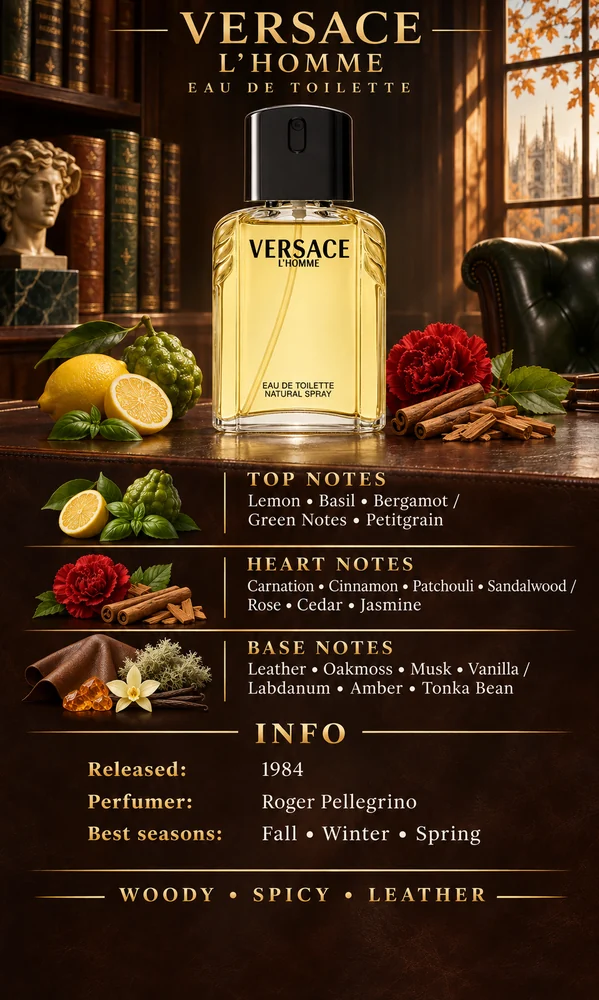
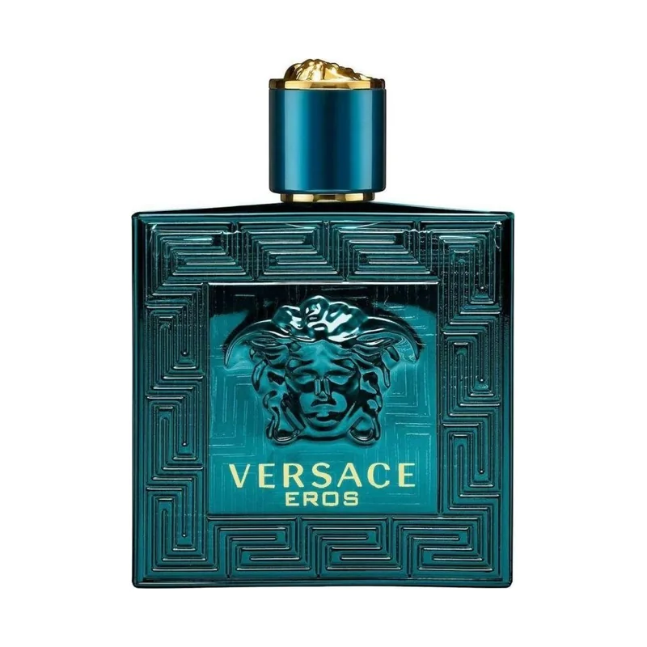
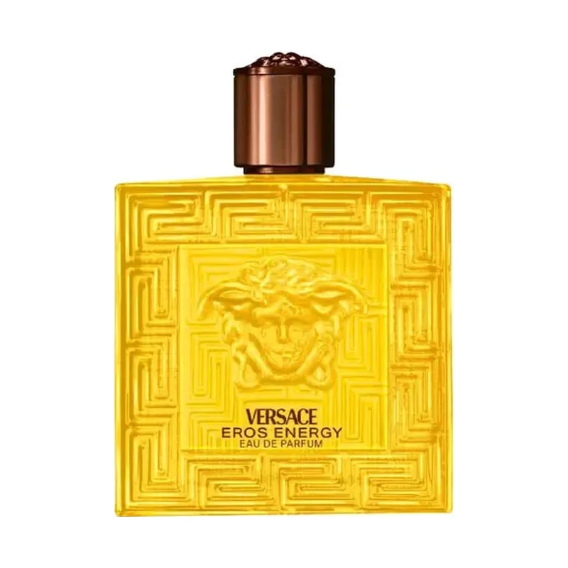
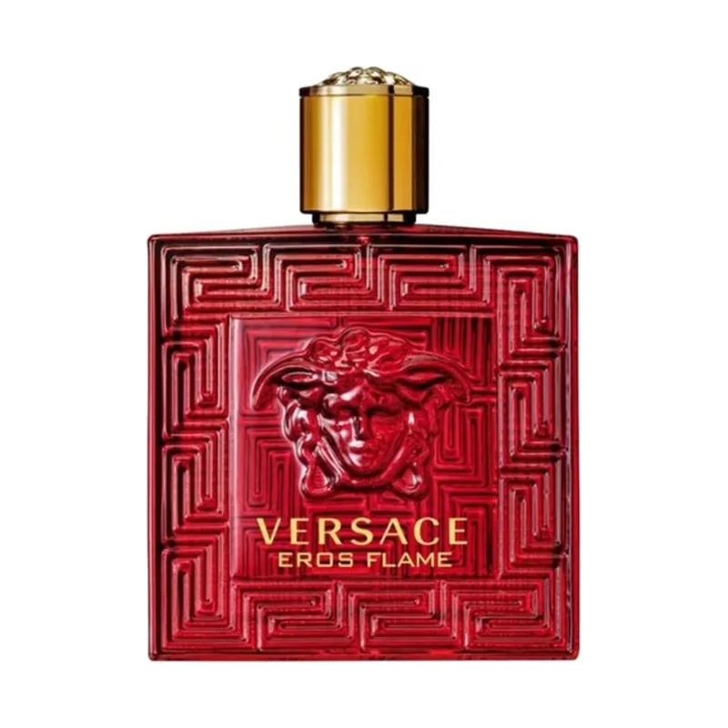

Versace
Versace L'Homme Eau de Toilette
β Beta Designer · Eau de Toilette · 1984 In collection
Randy's rating5.75/10
Public rating8/10
Overall R17.07/25
Normalized N0.683
R = 5.75 × 1.3 + 8 × 1.2 = 17.07 of 25 · N = 17.07 ÷ 25 = 0.683 How scores work
Notes
Top notes
- lemon
- basil
- bergamot
- green notes
- petitgrain
Heart notes
- carnation
- cinnamon
- patchouli
- sandalwood
- rose
- cedar
- jasmine
Base notes
- leather
- oakmoss
- musk
- vanilla
- labdanum
- amber
- tonka bean
Details
| House | Versace |
|---|---|
| Type | Designer · β Beta |
| Concentration | Eau de Toilette |
| Released | 1984 |
| Perfumer | Roger Pellegrino |
| Scent family | Woody, Floral, Citrus |
| Best seasons | Spring, Fall, Winter |
| Similar to | classic 1980s woody citrus chypres distinct from Dylan Blue, Eros Eau de Toilette, and Eros Energy |
Sources
Fragrantica 3.78/5 (about 7.6/10) from 2,827 votes; Parfumo 7.5/10 from 499 ratings. Synthesized and rounded to 8. Checked 2026-11-06.
Other Suggestions
-
 VersaceVersace Pour Homme Dylan Blue Eau de ToiletteRandy7.5Public 8N 0.774
VersaceVersace Pour Homme Dylan Blue Eau de ToiletteRandy7.5Public 8N 0.774 -

VersaceEros Eau de ToiletteRandy8Public 8N 0.800 -

VersaceEros Energy Eau de ParfumRandy8Public 8N 0.800 -
 VersaceThe Dreamer Eau de ToiletteRandy5.5Public 8N 0.670
VersaceThe Dreamer Eau de ToiletteRandy5.5Public 8N 0.670 -

VersaceEros Flame Eau de ParfumRandy—Public 8N —